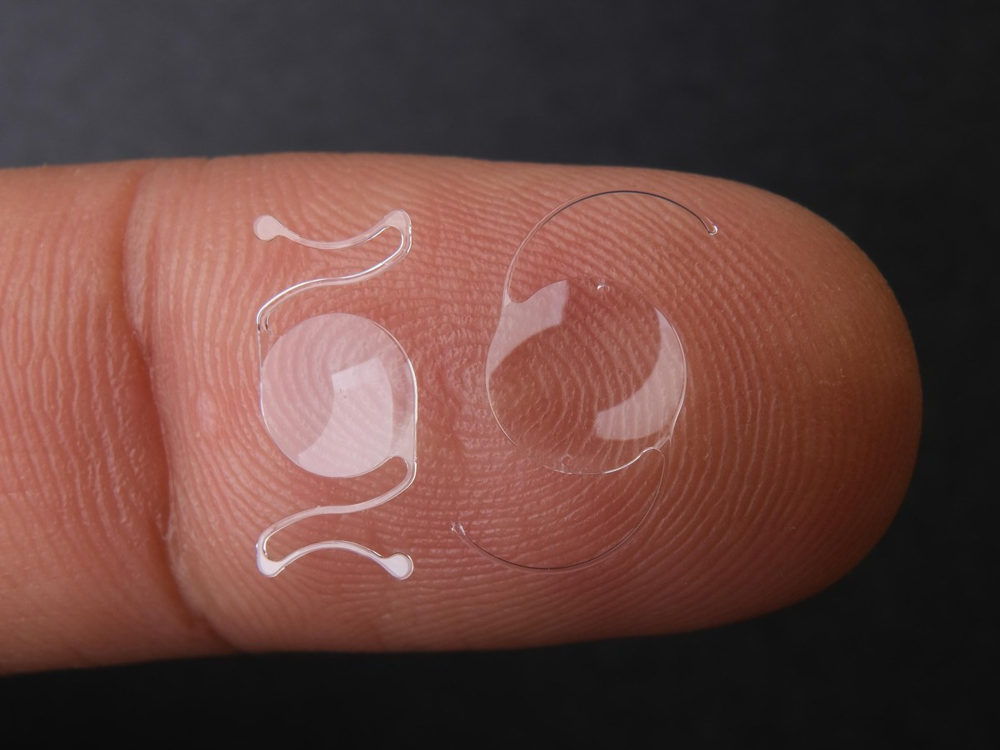

Kaihi ja linssikirurgia
Kun näkö alkaa tuntua utuiselta tai valo häikäisee entistä herkemmin, syynä voi olla kaihi. Kaihileikkaus — tarvittaessa palvelusetelillä — tai muu linssikirurgia voi olla aiheellinen, kun näön heikkeneminen haittaa arkea riittävästi; tarve arvioidaan aina tutkimuslöydösten perusteella. Jälkisamentumaa voidaan tarvittaessa hoitaa YAG-laserilla.